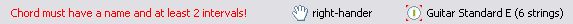

The status bar at the bottom of the main window shows important status information of the program. In our case the following points are presented:

On the right side of the status bar the currently active instrument is shown. All calculations will be performed on the active instrument. You can set the active instrument in the Instruments View. Double-click on this item opens the active instrument in the Instrument Editor. If there is no active instrument (that means that there are no instruments in the instrument list) the status bar shows "No active instrument!". In such a case a double-click opens a blank Instrument Editor to define a new instrument.
It is also possible to choose whether you are right- or left-hander with simple double-click. Dependent on this setting several graphical representations will be adjusted.
On the left side of the status bar potentially useful warnings will be highlighted in red letters.
Workbench → Views → Instruments
Workbench → Editors → Instrument Editor